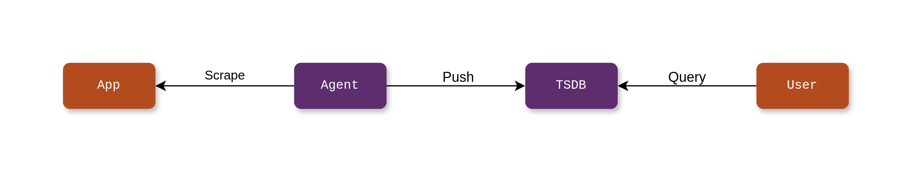
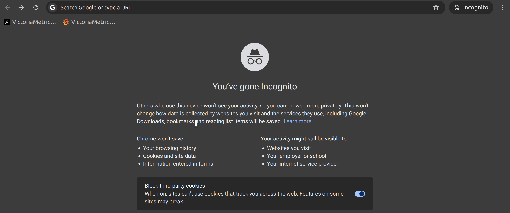
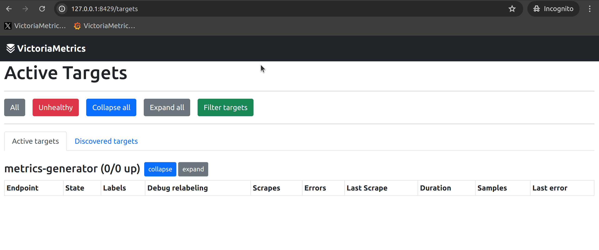
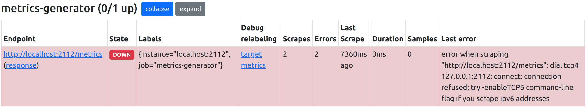
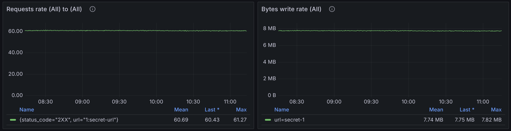
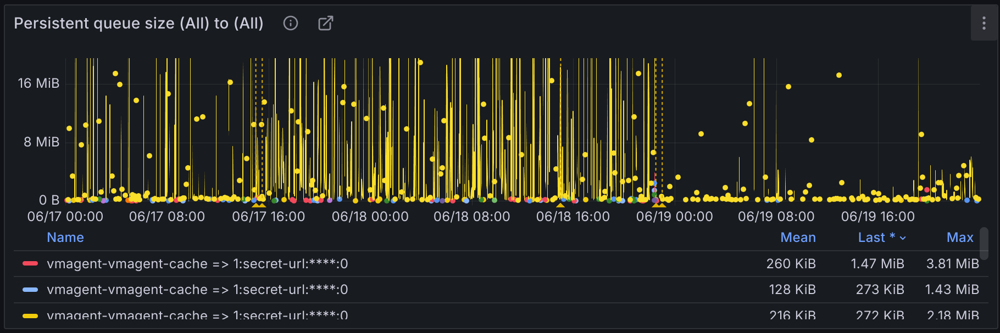
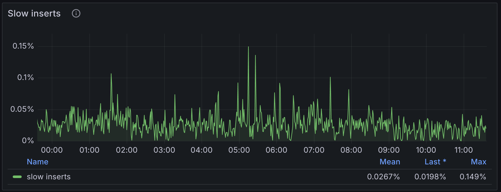
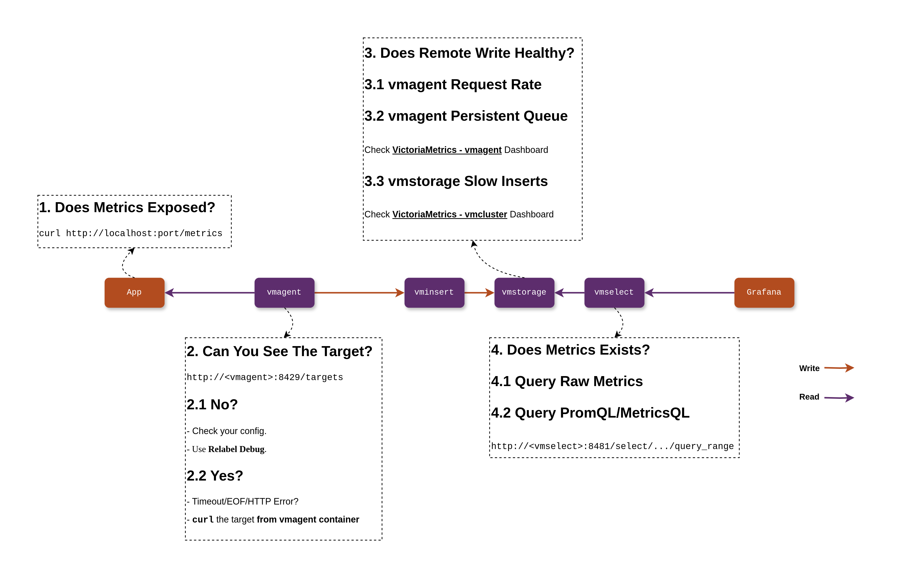

监控数据问题排查：我的指标去哪儿了？
问题
复杂的现代应用离不开可观测性，而指标监控是可观测性中非常重要的一环。最常见的指标监控采集、处理、存储、展示流程可以概括为下图：

如果它出了问题，例如，我们经常被用户问道：“我已经在应用中记录了指标，为什么我的指标不能在 Grafana 上查到？”，应该怎么进行排查呢？今天我们以 VictoriaMetrics 为例，借助其内置的工具排查一下这个问题。当然，你可以在 Prometheus 上套用一样的排查思路，他们是高度兼容的。
数据采集
数据采集通常问题只出现在这 3 处：应用、vmagent、它们之间的网络。
对应用来说，首先应该检查监控指标是否有正常暴露，可以通过访问指标的 HTTP 接口（如 curl http://IP:Port/metrics）查看，如果一切正常，你应该能看到如下的内容：
# HELP go_gc_duration_seconds A summary of the pause duration of garbage collection cycles.
# TYPE go_gc_duration_seconds summary
go_gc_duration_seconds{quantile="0"} 0
go_gc_duration_seconds{quantile="0.25"} 0
go_gc_duration_seconds{quantile="0.5"} 0
go_gc_duration_seconds{quantile="0.75"} 0
go_gc_duration_seconds{quantile="1"} 0
go_gc_duration_seconds_sum 0
go_gc_duration_seconds_count 0
# HELP go_goroutines Number of goroutines that currently exist.
# TYPE go_goroutines gauge
go_goroutines 7
# HELP go_info Information about the Go environment.
# TYPE go_info gauge
go_info{version="go1.22.5"} 1
...
如果你没能看到这些监控数据，则需要对应用进行调试，通常可以参考 Prometheus SDK 的文档，或者这个简单的 Go 语言示例。
好，那么应用一切正常后，我们要检查 vmagent 是否进行了数据采集。vmagent 提供了非常方便的 WebUI（如 http://<vmagent>:8429/）来协助，从 target 页面可以找到所有采集任务，正常情况下，它应该像这样：

到这一步，最常见的问题可能是：
- 找不到对应的 Target（无论它是 Healthy 还是 Unhealthy 的）；
- 对应的 Target 处在 Unhealthy 状态。
如果没有找到 Target，它可能没有被服务发现，也可能是在服务发现后被 Relabeling Rule 所丢弃，vmagent 自带的 Relabel Debug 功能可以有效地帮助你确认问题（见下图）。

如果对应 Target 处在 Unhealthy，原因可能是：
- vmagent 与应用间的网络不通；
- 应用暴露的指标过于庞大导致访问超时。
通常你可以在 vmagent 的 WebUI 上观察到具体的错误原因：

我常常建议用户从 vmagent 所在的环境（例如 vmagent 所在的 Container / Pod / Node）手动访问抓取目标，观察网络情况是否与错误原因相匹配，如果匹配，则需要对网络问题进行（iptables / Kubernetes Service / …）调试。
数据传输
当你没能在数据采集端找到问题时，你一定会想，数据是否真的发送到了存储端（VictoriaMetrics Single-Node / Cluster）。
首先考虑的是 vmagent 的 Remote Write 是否正常，我们需要借助一些 vmagent 暴露的指标来观察，以下截图来自于 VictoriaMetrics 提供的 Grafana Dashboard，它描述了对每个 Remote-Write Target 的数据传输情况：

如果你还没有配置 VictoriaMetrics Grafana Dashboard，也可以尝试以下语句：
sum(rate(vmagent_remotewrite_requests_total{}[1m])) by(url, status_code) > 0
sum(rate(vmagent_remotewrite_conn_bytes_written_total{}[1m]))> 0
另一个可能出现在 vmagent 侧的问题是 Remote Write 队列堵塞，同样，可以通过观察 vmagent_remotewrite_pending_data_bytes 指标发现：

这种情况会导致 vmagent 采集的数据无法及时发往 Remote Write Target，因此用户不能马上查询到他们的指标。可能原因包括：
- Remote Write Target 性能不足以支撑当前的数据摄取；
- vmagent 与 Remote Write Target 之间的网络带宽不足。
其中，第一种情况可以很容易通过 vmstorage 暴露的指标观察，通常 Slow Insert 应该维持在 10% 以内：
max(
rate(vm_slow_row_inserts_total{}[1m])
/ rate(vm_rows_added_to_storage_total{}[1m])
)
我同样推荐直接在 Grafana Dashboard 上将它可视化，这些指标已经集成在了 VictoriaMetrics Cluster 的 Dashboard 中：

如果没有从 VictoriaMetrics Cluster 的监控中发现太多问题，那么或许可以考虑第二种情况，也就是网络带宽是否充足了。
数据查询
假设前面的步骤都没有发现问题，那么恭喜你，数据很有可能已经存储在了 TSDB 中。这时，数据查询不到结果通常是因为 PromQL/MetricsQL、变量等问题引起的。
在 VictoriaMetrics Cluster 中，首先建议从最底层的 vmselect 对 vmstorage 进行查询，并去除语句中的所有变量和函数，例如：
// 原始语句
rate(vm_slow_row_inserts_total{job=~"$job_storage"}[$__rate_interval])
// 排查时所用语句
vm_slow_row_inserts_total
这样可以确保你的 TSDB 中已经存有了这个指标，然后可以逐步将 Label 条件、变量、函数加上，检查是哪一步的查询结果不符合预期。
如果都没有问题，那原因应该出在更上层的查询路径中，例如 Grafana -> vmauth -> vmselect_level_1 -> ... vmselect_level_n -> vmstorage，这时应该逐层向上排查。
总结
通过上面的介绍，相信你已经对在指标监控体系中排查问题有了一定的思路。我将这些思路总结成了一张图，希望方便你记忆。

由于篇幅有限，本文能覆盖的内容不过是日常问题中的冰山一角。如果你有遇到更复杂的问题，我推荐：
- 善用对 VictoriaMetrics 的监控，Grafana Dashboard 是你最好的工具；
- 来到 VictoriaMetrics 的社区进行提问，我们很乐意解答用户的问题和实现新的功能。